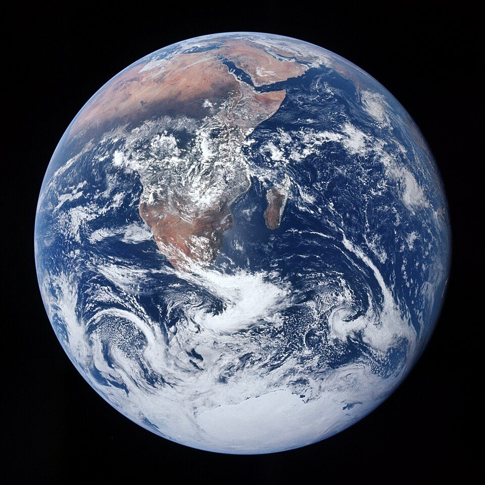

Planet Earth · 55 videos
Videos: Planet Earth
A selection of the best explainer videos on YouTube for each article, from channels such as National Geographic, Kurzgesagt, TED-Ed, BBC Earth and PBS Terra.
Videos are from YouTube and belong to their creators. They only load when you click them.
Inside the Earth
The Earth's layers
- Everything You Need to Know About Planet EarthKurzgesagt – In a Nutshell
- What's Actually Inside the Earth's Core?SciShow
Plate tectonics
- Plate Tectonics ExplainedMinuteEarth
- The Plate Tectonics Revolution: Crash Course Geography #19CrashCourse
Volcanoes
- Volcanoes 101 | National GeographicNational Geographic
- Volcanic eruption explained - Steven AndersonTED-Ed
Earthquakes and tsunamis
- How tsunamis work - Alex GendlerTED-Ed
- Earthquakes Explained: Crash Course Geology #14CrashCourse
Rocks and minerals
- What Are Rocks and How Do They Form? Crash Course Geography #18CrashCourse
The history of the Earth
- A Brief History of Geologic TimePBS Eons
Oceans and water
Currents and tides
- How do ocean currents work? - Jennifer VerduinTED-Ed
- Why are there two tides a day? - Elise CuttsTED-Ed
Life in the deep sea
- What’s Hiding at the Most Solitary Place on Earth? The Deep SeaKurzgesagt – In a Nutshell
- The Strangest Creatures of the Ocean | BBC EarthBBC Earth
Rivers and lakes
- Why Do Rivers Curve?MinuteEarth
Glaciers and ice
- Climate 101: Glaciers | National GeographicNational Geographic
- What Are Glaciers? Crash Course Geography #26CrashCourse
The water cycle
- NASA | Earth's Water CycleNASA Goddard
Atmosphere and climate
The atmosphere
- What Does the Atmosphere Do? Crash Course Geography #6CrashCourse
- How Big is the Atmosphere?Jared Owen
Weather and clouds
- ☁️ What is a Cloud? Crash Course Geography #10CrashCourse
- How did clouds get their names? - Richard HamblynTED-Ed
Storms, hurricanes and tornadoes
- Hurricanes 101 | National GeographicNational Geographic
- How do tornadoes form? - James SpannTED-Ed
The world's climates
- 🥔 How do we Classify Climates? Crash Course Geography #13CrashCourse
Climate change
- Causes and Effects of Climate Change | National GeographicNational Geographic
- What is Climate Change?: Crash Course Climate & Energy #1CrashCourse
Auroras, rainbows and lights in the sky
- What is an aurora? - Michael MolinaTED-Ed
- What Causes Auroras?SciShow
Life and ecosystems
The origin of life
- The mysterious origins of life on Earth - Luka Seamus WrightTED-Ed
- How Did Life Begin?History of the Earth
Evolution
- How Evolution Works (And How We Figured It Out)PBS Eons
- How Evolution worksKurzgesagt – In a Nutshell
Biodiversity
- Why is biodiversity so important? - Kim PreshoffTED-Ed
Forests and rainforests
- Rainforests 101 | National GeographicNational Geographic
- Explore the Rainforest! | Ecology for KidsSciShow Kids
The great extinctions
- How The Dinosaurs Actually DiedKurzgesagt – In a Nutshell
- When will the next mass extinction occur? - Borths, D'Emic, and PritchardTED-Ed
World geography
Mountains and mountain ranges
- How Do Mountains Form?: Crash Course Geology #11CrashCourse
Deserts
- Why Does Earth Have Deserts?MinuteEarth
- Deserts 101 | National GeographicNational Geographic
The poles
- The Arctic vs. the Antarctic - Camille SeamanTED-Ed
- The deadly race to the South PoleVox
Our impact
Population and human footprint
- Human Population Growth - Crash Course Ecology #3CrashCourse
- Overpopulation – The Human Explosion ExplainedKurzgesagt – In a Nutshell
Air, water and soil pollution
- Air Pollution 101 | National GeographicNational Geographic
Plastics and waste
- What really happens to the plastic you throw away - Emma BryceTED-Ed
- Plastic Pollution: How Humans are Turning the World into PlasticKurzgesagt – In a Nutshell
Deforestation and habitat loss
- Climate 101: Deforestation | National GeographicNational Geographic
- The Tragedy Of Deforestation | Climate Change: The Facts | BBC EarthBBC Earth
Energy and renewables
- Can the world rely on renewable energy? | Future Earth | BBC NewsBBC News
- Renewable Energy 101 | National GeographicNational Geographic
Caring for the planet: solutions
- Why It's Time to Stop Saving the Planet*PBS Terra
Earth curiosities
Earth simulators
- Everything You Need to Know About Planet EarthKurzgesagt – In a Nutshell
Extreme places
- Death Valley: One of the Most Extreme Places on EarthSmithsonian Channel